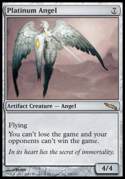

Artifacts
 |
Hablemos de artefactos, sin duda alguna uno de los permantes con mas antiguedad en el juego de Magic, usados como una poderosa herramienta los artefactos
son los idoneos para hacer el trabajo sucio en muchas ocasiones, ejecutando su programacion como las maquinas que son los artefactos pueden ser sumamente nocivos
para la salud de tu oponente, en la mayoria de los casos los artefactos no poseen una identidad de color de mana, esto los hace todavia mas peligrosos ya que al
no requerir un mana especifco para ser jugados pueden acomodarse en casi cualquier deck, muchos otros tienen una identidad de color de mana en sus costos de juego esto
no les quita que se puedan convertir en un dolor de cabeza. |
Artifacts Creatures
|  |
Al igual que el exterminador estas maquinas cumpliran la mision que su creador (esperemos que nunca skynet) les de hasta el final y sin descanso, muchos de los
artefactos criatura son sumamente molestos y para muestra un boton, el Platinum Angel no solo no deja que tu oponente gane el juego si no que ademas no permite que tu
pierdas el duelo, las jugadas mas maquiavelicas que tengan pensadas para ti se quedaran en la memoria de tu oponente mientras dicha criatura este en juego, con eso en mente
sera mejor que guardes un hechizo u dos para quitartelo de encima, al igual que las criaturas encantamiento las criaturas artefacto pueden ser afectados por habilidades o hechizos
que hagan obejetivo a un artefacto |
Artifacts Enchanments
Este extraño caso de la combinacion de un artefacto con un encantamiento ha sido sumamente escaso en el juego de Magic, de hecho solo se ha visto en la expansio de Theros con
los cinco artefactos encantamiento que pertenecen a los dioses de los distintos colores de mana.